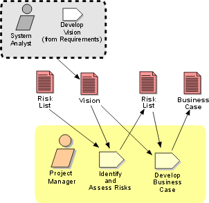

Disciplines >
Disciplines >
 Project Management >
Project Management >
 Workflow >
Evaluate Project Scope and Risk
Workflow >
Evaluate Project Scope and Risk
Disciplines >
Project Management >
Workflow >
Evaluate Project Scope and Risk
Workflow Detail:
|
Topics |
 |
The purpose of this workflow detail is to reappraise the project's intended capabilities and characteristics, and the risks associated with achieving them. This evaluation is done once after the preferred approach is chosen and the project is initiated, to give a solid basis for detailed planning, and then at the end of each iteration, as more is learned, and risks are retired.
The skills required in the person acting as Project Manager in this workflow detail are in technical project management - risk analysis, planning and decision analysis - and in the domain of the application.
This workflow detail updates and refines the Risk
List and Business Case. Techniques
such as those described in Workflow
Detail: Conceive New Project: Work Guidelines may be used for risk and
decision analysis. The Risk List and Business Case should be subjected to
internal walkthroughs and reviews to ensure there is a general consensus, before
the next round of detailed planning is begun.
|
Rational Unified
Process
|